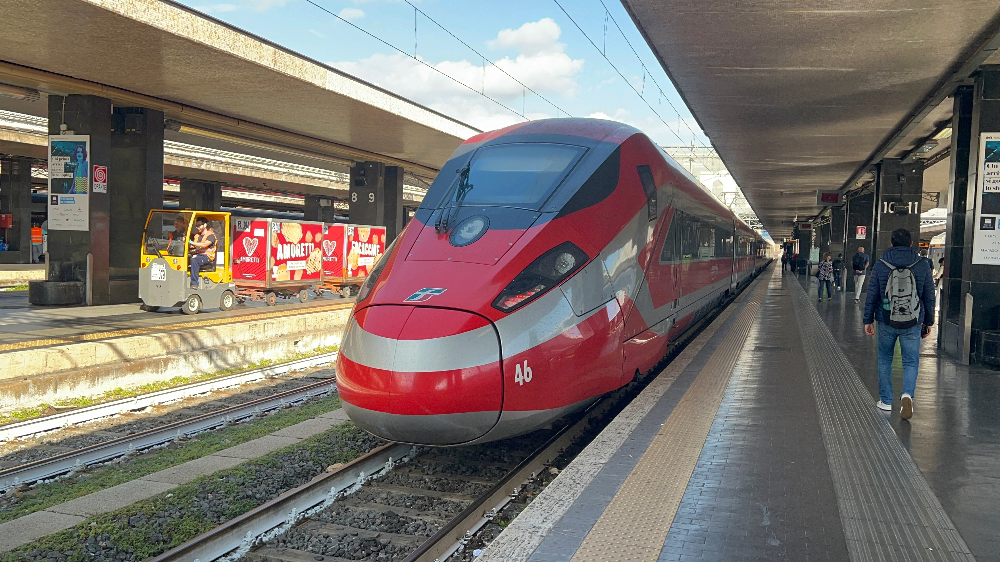
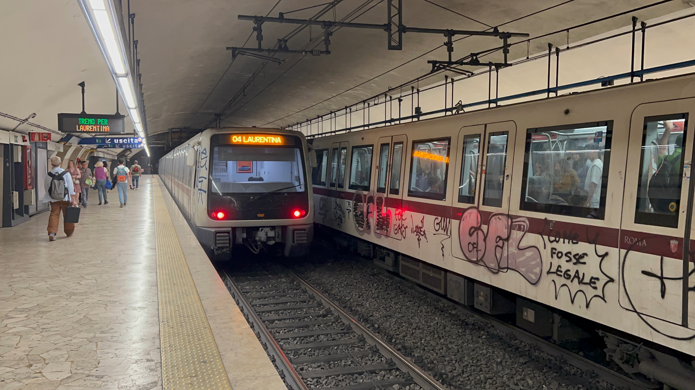

Rome Train Station
Taken in 2025

This photo was taken at the main train station in Rome in 2025.
These trains go very fast!!!
Rome

This photo was taken at the main train station in Rome in 2025.
These trains go very fast!!!

This photo was taken at a metro station in Rome in 2025
This was a cool train I used it too go from the Vactian to the Colosseum

This is a photo traversing the streets of rome
Rome has had streets cars for over 125 years!!!

This photo was taken at the Roma San Pietro railway station
This is a very senic station and has 4 tracks!